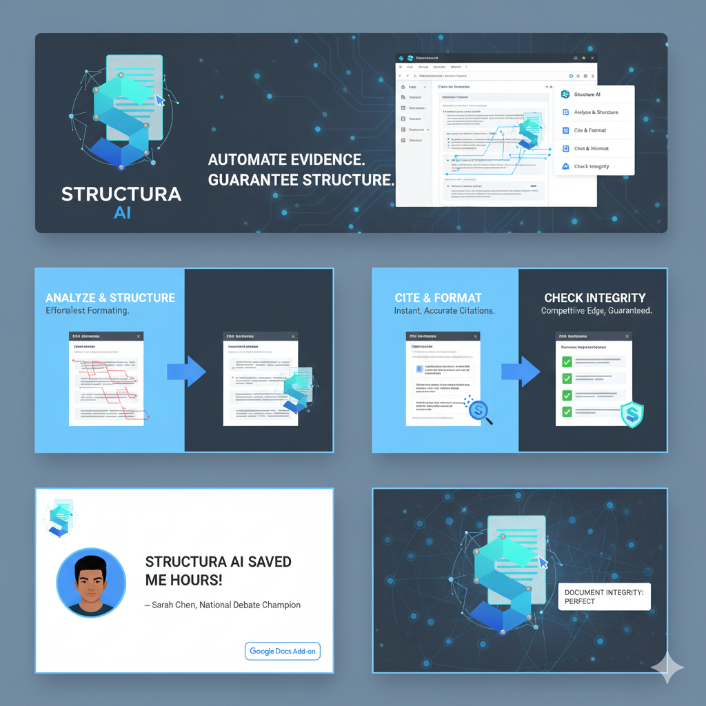

Structura™ Google Docs Addon
The Structura Addon for Google Docs™ is a powerful suite of tools designed to streamline document preparation, analysis, and management, particularly for structured content like debate cases or research papers. It integrates advanced AI capabilities to assist with text processing, citation management, and document formatting.
Key Features:
- AI-powered Indexing and Summarization
- Comprehensive Heading Management
- Automated Citation Generation and Formatting
- Document Cleaning and Link Checking
- Customizable In-Round Timer
- Flexible Document Sharing and Labeling
Getting Started:
Once installed from the Google Workspace Marketplace™, the Structura Addon will appear in your Google Docs sidebar. You can launch its various interfaces from the custom menu item "Structura Tools" in your document menu bar.
Available Tools:
- Document & Prep Tools Sidebar: Access AI indexing, heading utilities, document cleaning, citation tools, and more.
- In-Round Timer Sidebar: Manage and utilize custom timers for various scenarios.
- Label Manager Sidebar: Configure and apply labels for document sharing and organization.
Why Use the Google Docs Addon?
Perfect for debaters and researchers who work primarily in Google Docs and need powerful formatting, citation management, and AI-powered analysis tools directly within their workflow.